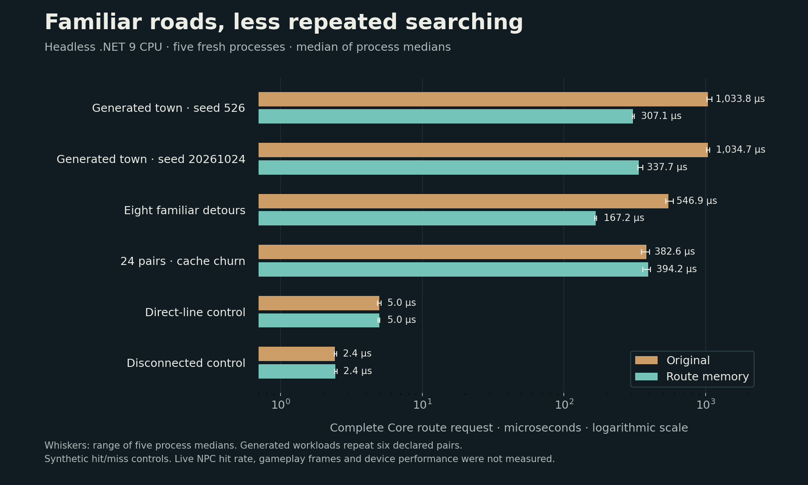

Familiar roads
A smith walks from home to the forge. A neighbour heads for the market, then makes the same journey tomorrow. Town life is full of familiar routes, and finding each of them from scratch is work the town need not keep repeating.
The latest change gives the town router a small shared memory. Once it has found a way around buildings, another request between the same patches of ground can reuse that search. Townsfolk already share the router, so the memory belongs to the neighbourhood rather than to one person.
Remember the way, keep the destination
A remembered route is a corridor through the ground, not somebody else's finished walk. Each request still uses its own exact starting position and destination. The existing smoothing runs again, preserving the way corners, doorways and the final approach are handled.
Two neighbours on different sides of the same patch still need their own approaches. Sharing the search should not send either one to the other's doorstep. Straightforward walks across open ground keep their quick path, and separate areas still fail their connectivity check without searching.
The memory keeps at most sixteen recently used corridors, each no longer than 1,024 cells. Its stored cell payload cannot exceed 64 KiB, and storage is created only when needed. Older entries make room for new ones. Each router owns the memory for its unchanged map; a freshly built router begins empty.
What the measurements show
The comparison runs the same production router with memory enabled and disabled, checks exact waypoints, and measures complete requests including smoothing. Across five independent runs, repeated routes through two generated towns took roughly 0.31 and 0.34 milliseconds instead of 1.03 milliseconds: about three times faster for those requests.
There is a trade-off. A workload cycling through twenty-four routes, more than the memory can hold, measured about three per cent slower. Open-ground and disconnected requests remained essentially unchanged. The checks also exercise eviction and the size limits.

These are routing measurements outside the game engine. They do not establish a frame-rate improvement or the proportion of real villagers whose routes will be reused. The benefit in a live town depends on how often its people ask for familiar journeys; that actual play pattern still needs measuring.